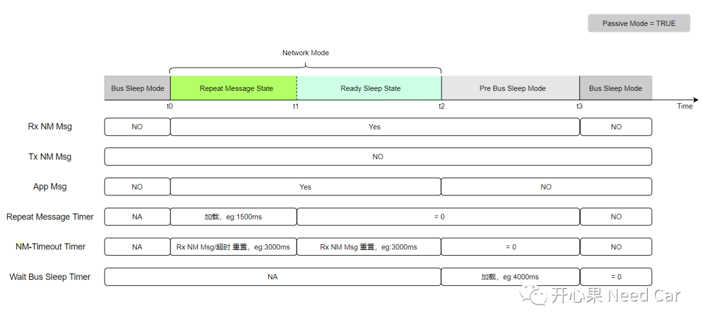
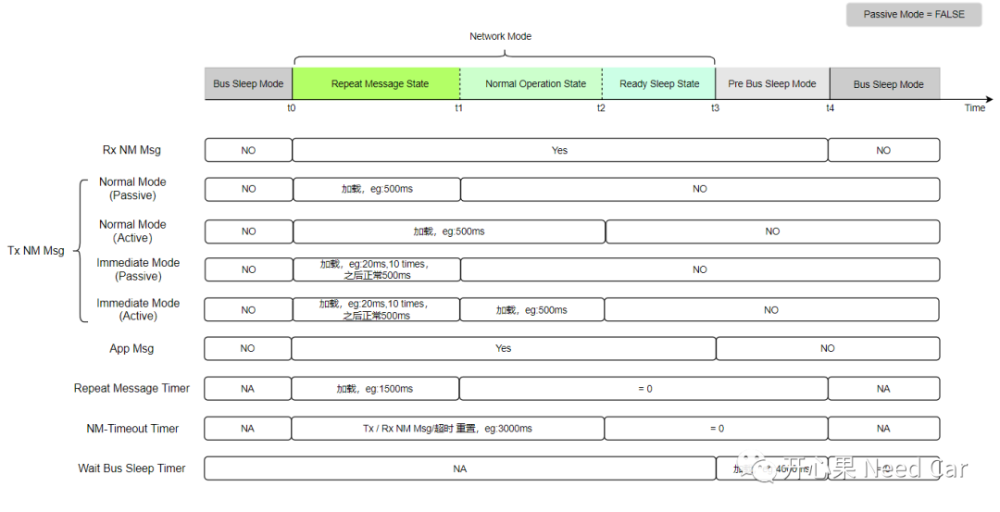
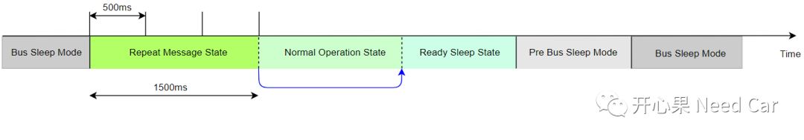
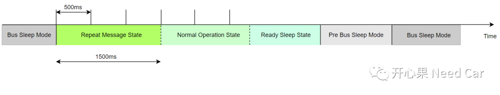
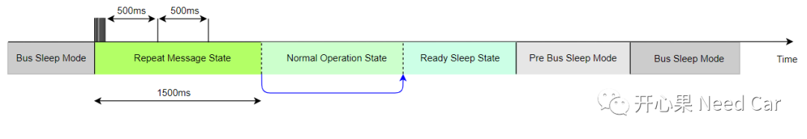
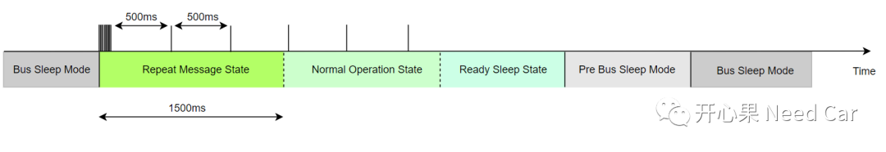

开心果 Need Car · 2022-05-29T13:12:00+08:00 · 微信原文
如本文标题，本文主要讨论的问题：网络管理报文的收/发与网络管理时间配置参数解析。
提示：以CAN总线为例
1、主动唤醒和被动唤醒
定时器：节点休眠前设定时间，比如：每2h节点主动醒来。
传感器：比如：脚踢门功能。脚踢后备箱，后备箱对应控制器主动唤醒网络，进而执行后备箱开启功能。
2、网络被动节点
网络被动节点的网络管理报文收/发行为及时间参数如下所示：

网络被动节点不会进入NOS(Normal Operation State)状态。
网络管理报文的接收（Rx）：在RMS(Repeat Message State)、RSS(Ready Sleep State)、PBM(Pre Bus-Sleep Mode)状态下均可以接收网络管理报文。BSM(Bus Sleep Mode)无法接收网络管理报文。
网络管理报文的发送（Tx）:在任何状态下均不会发送网络管理报文。
应用报文的发送：在RMS、RSS状态下可以发送应用报文，PBM下停发应用报文（已放入底层硬件缓存区的报文可以发送）。如果不理解底层硬件缓存区，可以参考前文Autosar通信栈：基础问题知多少。
Repeat Message Timer：进入RMS状态时，启动该时间，比如：1500ms，当该时间走完，由RMS进入RSS状态。
NM-Timeout Timer：进入RMS时，启动该时间，比如：3000ms，在此期间接收到网络管理报文或者超时，重置该时间。进入RSS状态，收到网络管理报文，重置该时间，如果收不到网络管理报文，超时后，进入PBM状态。
Wait Bus Sleep Timer：在PBM状态，收不到网络管理报文，该时间超时后进入BSM，比如：4000ms。PBM状态下，如果收到网络管理报文或者网络请求，则重新进入RMS。
3、网络主动节点
网络主动节点的网络管理报文收/发行为及时间参数如下所示：

网络管理报文的接收（Rx）：在RMS(Repeat Message State)、NOS(Normal Operation State)、RSS(Ready Sleep State)、PBM(Pre Bus-Sleep Mode)状态下均可以接收网络管理报文。BSM(Bus Sleep Mode)无法接收网络管理报文。
网络管理报文的发送（Tx）:网络主动节点的NM Msg发送行为有多种情况：
1.正常发送模式（没有快速发送功能，网络被动唤醒）：在RMS以相同的周期发送网络管理报文，eg:500ms，如下所示：

2.正常发送模式（没有快速发送功能，网络主动唤醒）：在RMS和NOS以相同的周期发送网络管理报文，eg:500ms，如下所示：

3.有快速发送功能（网络被动唤醒）：在RMS状态下，先以快发周期发送一定次数的网络管理报文，eg：20ms发送10次，之后以正常周期发送网络管理报文，eg：500ms。如下所示：

4.有快速发送功能（网络主动唤醒）：在RMS状态下，先以快发周期发送一定次数的网络管理报文，eg：20ms发送10次，之后以正常周期发送网络管理报文，eg：500ms。上层主动请求网络，进入NOS状态，以正常周期发送网络管理报文，eg：500ms。如下所示：

应用报文的发送：在RMS、NOS、RSS状态下可以发送应用报文，PBM下停发应用报文。
Repeat Message Timer：进入RMS状态时，启动该时间，比如：1500ms，当该时间走完，由RMS进入NOS/RSS状态(取决于上层是否主动请求网络)。
NM-Timeout Timer：进入RMS时，启动该时间，比如：3000ms，在此期间接收/发送网络管理报文或者超时，重置该时间。进入RSS状态，接收/发送网络管理报文，重置该时间，如果收不到网络管理报文，超时后进入PBM状态。进入NOS状态，接收/发送网络管理报文或者超时，重置该时间。
Wait Bus Sleep Timer：在PBM状态，收不到网络管理报文，且没有网络请求，该时间超时以后进入BSM；如果收到网络管理报文或者网络请求则重新进入RMS。
往期精彩回顾